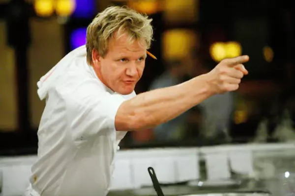

This website showcases different recipes, tips, and more.
Start looking for your dream recipe!

Culinary Gods:
Gordon Ramsey and Julia Child
"Put your head down and work hard. Never wait for things to happen. Make them happen for yourself through hard graft and not giving up." -Gordon Ramsey
"This is my advice to people: Learn how to cook, try new recipes, learn from your mistakes, be fearless, and above all have fun."-Julia Child
Notable Chefs:
Guy Fieri and Anthony Bourdain
"We're getting ready to sit down at the table and have Thanksgiving, and there's people that are not with their families. There are people that are in dangerous areas, putting their lives on the line to keep our country free, and I think that's something we should all celebrate every day." -Guy Fieri
"Anyone who's a chef, who loves food, ultimately knows that all that matters is: 'Is it good? Does it give pleasure?'"-Anthony Bourdain